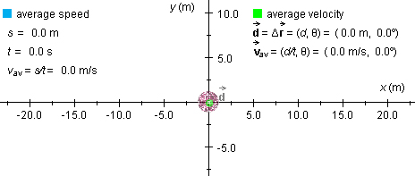
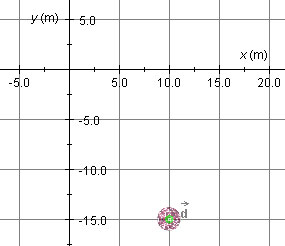
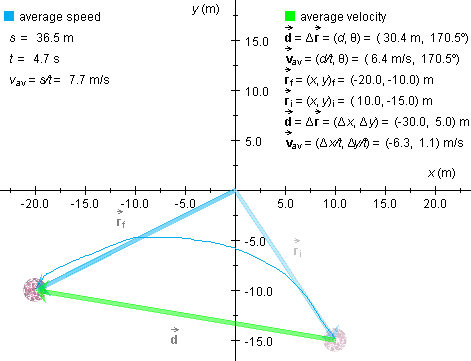
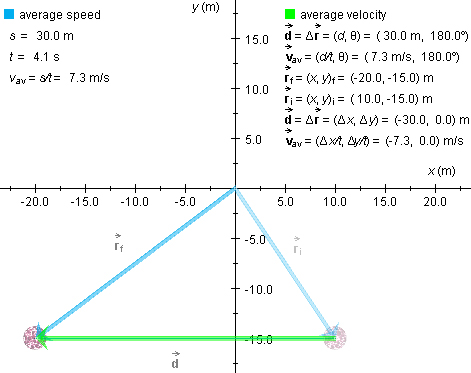

.
.
This page is designed to get you started using the applet. The applet should be open. The step-by-step instructions on this page are to be done in the applet. You may need to toggle back and forth between instructions and applet if your screen space is limited.
Exercise 1. Press the Reset button .
Figure 1 below shows the red ball at the origin of an (x,y)-coordinate system, plus some related data.

Figure 1
The green dot at the center of the ball represents a zero
displacement of the ball. In general, the applet shows the
displacement (green arrow) from the start of the motion to the moment
the motion is stopped. The displacement is labeled  , in boldface and with an arrow above the
d to indicate that displacement is a vector quantity.
, in boldface and with an arrow above the
d to indicate that displacement is a vector quantity.
Select the Data button  ,
and write out the names and symbols of the various quantities
displayed, to get used to the notation. Figure 1 displays these
items without the surrounding box frames.
,
and write out the names and symbols of the various quantities
displayed, to get used to the notation. Figure 1 displays these
items without the surrounding box frames.
Under 'average speed':
Under 'average velocity':
=
Δ ,
, av from the beginning of the motion up to
the instant the motion is stopped.
av from the beginning of the motion up to
the instant the motion is stopped.The displacement is indicated in terms of its magnitude d and direction angle θ relative to the positive x-axis in the positive sense (counter-clockwise).
Note that the average velocity is in the same direction as the displacement, always. Therefore, both have the same direction angle θ.

Exercise 1. Press the Initial-Position button  . When the mouse
cursor is in the applet window it takes the form of a '+', suggesting
a pair of cross hairs. The (x,y)-coordinates of the
point at the center of the cross hairs are displayed.
. When the mouse
cursor is in the applet window it takes the form of a '+', suggesting
a pair of cross hairs. The (x,y)-coordinates of the
point at the center of the cross hairs are displayed.
Move the cursor to (x,y) = (10.0,-15.0) m, and click the mouse. The ball is now fixed at this initial position. Alternatively, click the mouse button when the cursor is at some other point at first and then drag with the mouse to (x,y) = (10.0,-15.0) m while keeping the mouse button pressed. Try it both ways, clicking RESET in between.

Figure 2
Exercise 2. You may find it easier to place the ball at
(x,y) = (10.0,-15.0) m if you first display the
coordinate grid. Reset the applet, press the Grid toggle button  , and place the ball at
(x,y) = (10.0,-15.0) m. Figure 2 above shows what you
should see.
, and place the ball at
(x,y) = (10.0,-15.0) m. Figure 2 above shows what you
should see.
Exercise 1. Reset the applet, and position the ball wherever you like. Display the Data boxes. Close the one titled 'average velocity', by clicking the 'X' in the top right corner of the box, so that only the one titled 'average speed' remains open. Click on the ball and keep the mouse button depressed. Observe the time t elapsed increasing in the average-speed box. Release the mouse button, and observe that the clock stops.
Exercise 2. Press the mouse button a second time. The clock resumes running. Does it show the time elapsed from the moment you pressed the mouse button the first time or from the moment when you pressed it the second time? Observe that the elapsed time does not advance while the mouse button is not pressed.
The clock shows the time elapsed from the moment the mouse button is pressed first until the current instant, not including times when the mouse button is released.
Exercise 3. Check if the elapsed time shown is real time. It is not.
Exercise 1. With the initial position of the ball set at
(x,y)i = (10.0,-15.0) m, drag the ball to
near (x,y)f = (-20.0,-10.0) m along a curved
path, as in the snapshot in Figure 3 below. The path is shown in blue
and the displacement vector in green.
Display the initial and final position vectors, i and f, respectively, by clicking
the Position toggle button  . The final position vector f is in blue, and the initial position
vector i in dimmed blue.
. The final position vector f is in blue, and the initial position
vector i in dimmed blue.

Figure 3
Exercise 2. Figure 3 also shows data related to the motion
you produced with the applet. Display these data by clicking the Data
toggle button . (The
frames surrounding the data are not reproduced in Figure 3.)
What are the values of the average speed vav and
of the magnitude av|av|
Correspondingly, what values do you have for the distance traveled s and the magnitude d of the displacement? In Figure 3, these are listed as 36.5 m and 30.4 m, respectively. The time elapsed is equal to 4.7 s.
Exercise 3. What value does the direction angle θ have for the average velocity and the displacement in your case? Are the two direction angles equal? In the case of Figure 3, the value of this common angle is θ = 170.5o. This angle is measured relative to the positive x-axis in the positive sense.
Note that no direction angle is given for the average speed because average speed is a scalar, not a vector quantity.
Exercise 4. With the ball still near (x,y)f = (-20.0,-10.0) m, click on the ball again, but do not drag it. Observe how the elapsed time advances and the values of the average speed and of the magnitude of the average velocity keep on decreasing.
Exercise 5. Repeat the observations in Exercises 2 to 4 by
returning the ball to the same intial position at
(x,y)i = (10.0,-15.0) m and then dragging it
elsewhere. To return the ball to this position, click the REWIND
button  .
.
Exercise 1. With the initial position of the ball at (x,y)i = (10.0,-15.0) m, press the Shift key and, while keeping the key down, click on the ball and drag it left to near (x,y) = (-20.0,-15.0) m. Make sure that you are pressing the Shift key before clicking on the ball. Are you getting the ball to move along a horizontal straight line?
Display the position vectors and the data (see preceding section titled "Average Velocity vs. Average Speed"), but not the grid. You should see something similar to what is shown in Figure 4 below.

Figure 4
In this case of straight-line motion in one direction, do the average speed and magnitude of average velocity have the same values in your case? They do in Figure 4, namely, 7.3 m/s.
Are the direction angles of the displacement and average velocity the same? They are in Figure 4, namely, 180o.
Note. In dragging the ball along a straight line by holding down the Shift key, it is important to drag steadily in one direction. Otherwise, the path traveled may contain short vertical or diagonal segments and the values displayed for distance traveled and average speed may differ slightly from what you would expect. Also, overshooting a target point and backtracking slightly would result in a distance traveled slightly larger than the magnitude of the displacement.
With the Shift key held down, you can also drag vertically or diagonally in a 45o-direction.